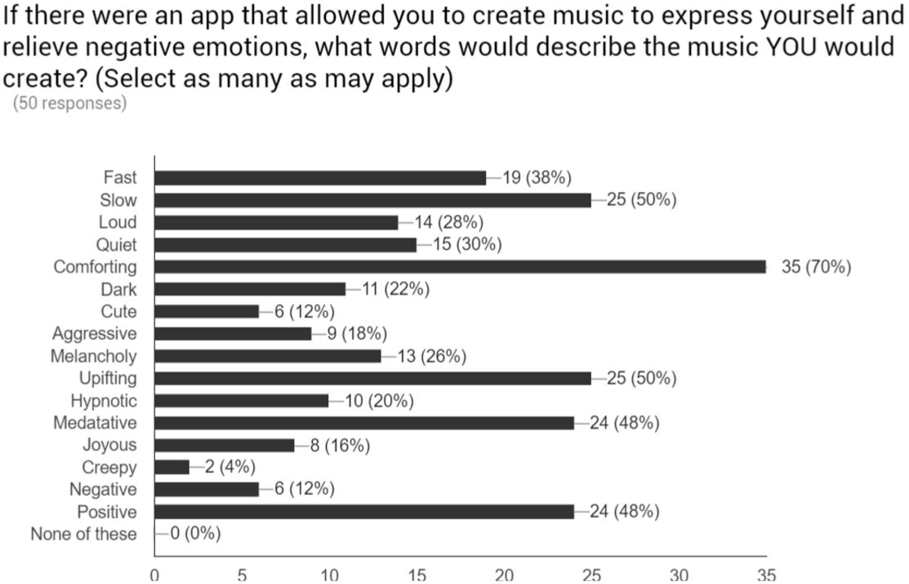
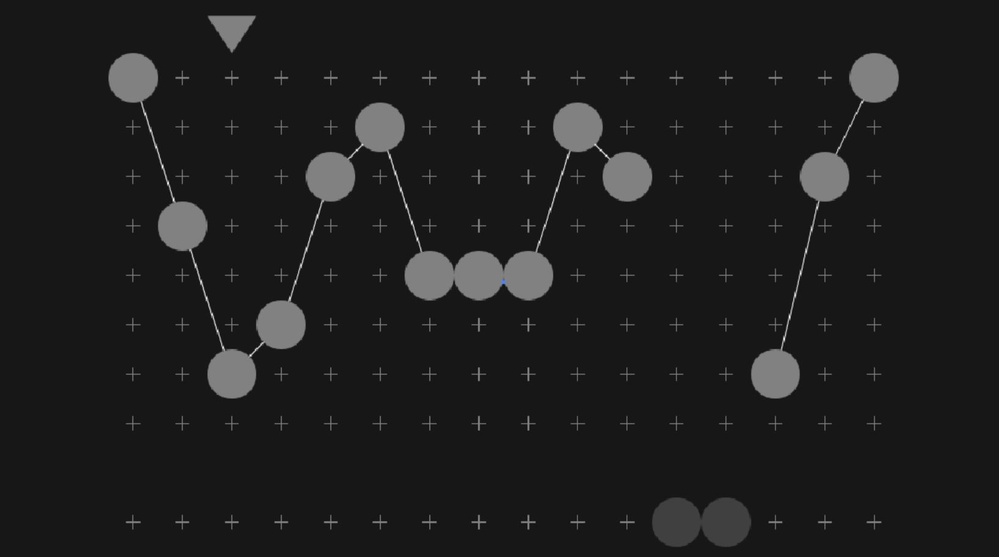
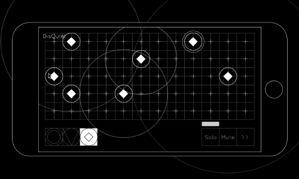

DisQuiet Prototype
Musical relaxation app for depression and anxiety
A video demo of the prototype
Role |
Audio Designer, Coder, Researcher, Visual Designer |
Tools |
Processing |
Status |
Presented at ISEA Hong Kong, “Design for Social Change” at Hong Kong Polytechnic University, and the 2016 UC Davis Undergraduate Research Conference |
Concept
An early, clock-inspired iteration of an accessible musical interface
The emotional health of incoming American college freshman hit an all-time low in 20141. Half of all college students report “overwhelming anxiety”2. Each year, 1100 students take their own lives.
For my Design Honors project at UC Davis, I asked “How might I use interactive design to improve the lives of emotionally struggling students?”.
The result, an app named DisQuiet, is based on the principle of Dialectical Behavioral Therapy that an engaging, creative, multisensory distractions can help people survive moments when depression and anxiety are overwhelming.
The app turns a user's touches, taps, and scribbles into harmonious musical loops, regardless of their musical experience. DisQuiet shows how we can expand the definitions of interactive design, human-centered design, and experience design to address core human issues.
Process
Primary research
After framing the challenge and defining my audience, I surveyed UC Davis students on their musical preferences during emotional distress to get a sense of what people might listen for to relieve emotional distress. Responses were varied, and included esponses such as “Debussy”, “Kanye West”, “cacophonous”, “Bossa Nova”, and “Ukulele!”.
A later iteration, which was used in user testing
After initial reading and surveying, I began iterating accessible musical interfaces and conducting user testing. One tester at the 2016 UC Davis Undergraduate Research Conference commented:
“I feel like I could use this for hours”.
A monophonic melody sequencer
Secondary research
I collected work from a variety of fields to develop a wide and nuanced view of the issues. I read about Design for Meaningful Experiences, Human-Centered Design, Dialectical Behavioral Therapy, mindfulness, and more.
The last iteration
This was the first project where I explored the intersections of music, design, code, and mental health. I continued this exploration in projects such as Gato.
1According to the Higher Education Research Institute at UCLA
2According to the American College Health Association